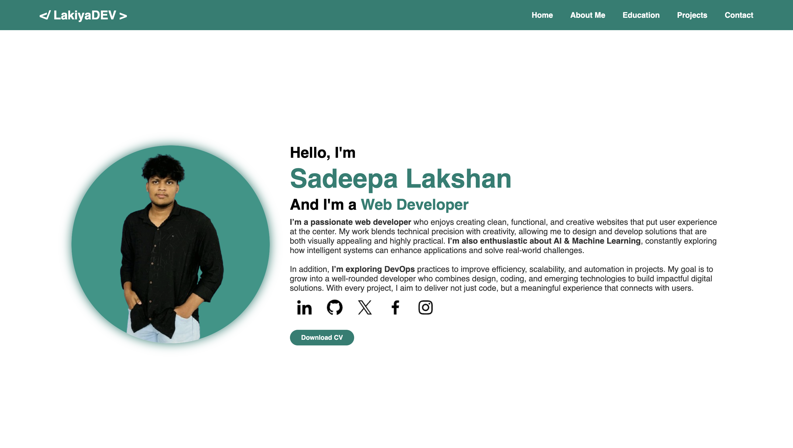
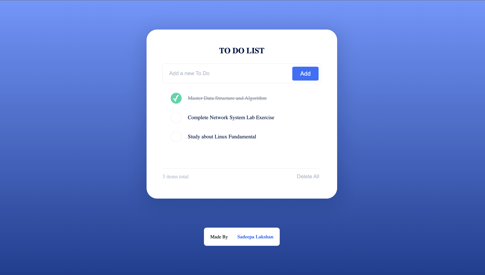

My Projects

Portfolio Website
A personal portfolio website showcasing my skills, projects, education and experience as a web developer. Built using HTML and CSS only.
View Project

To-Do List Application
A simple and intuitive to-do list application that allows users to manage their tasks efficiently. Built using React for the front-end and Node.js for the back-end.
View Project
E-commerce Website
An e-commerce website that enables users to browse and purchase products online. Built using Django for the back-end and Bootstrap for the front-end.
View Project